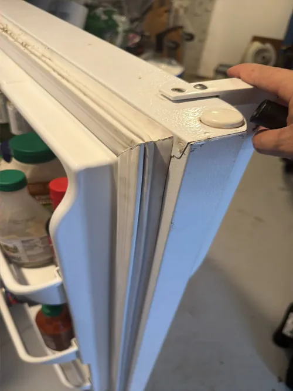

LG Refrigerator Repair: Why Modern Smart Refrigerators Require Specialized Diagnostics
Modern refrigerators have evolved far beyond simple cooling appliances. Today’s LG smart refrigerators combine advanced electronics, inverter compressor technology, temperature monitoring systems, digital control boards, sensors, Wi Fi connectivity, and sophisticated software designed to improve performance and energy efficiency. While these innovations provide many benefits for homeowners, they also make appliance diagnostics significantly more complex than traditional refrigerator repair.
Many homeowners assume that refrigerator problems can be identified simply by observing symptoms such as poor cooling, unusual noises, or ice maker failure. However, modern smart refrigerators often contain multiple interconnected systems that can produce similar symptoms even when the root cause is completely different. This is one of the primary reasons why professional LG refrigerator repair increasingly relies on specialized diagnostics rather than simple visual inspections.
One of the biggest differences between older refrigerators and modern smart appliances is the amount of electronic communication that occurs behind the scenes. Temperature sensors, control boards, fan motors, compressor systems, and defrost components constantly exchange information to maintain proper cooling conditions. If a single component begins sending incorrect data, the refrigerator may experience cooling problems even though the actual cooling system remains functional.

For example, a refrigerator that appears to have compressor problems may actually be experiencing sensor failures or communication errors between electronic components. Likewise, temperature fluctuations can sometimes be traced to software controlled systems rather than mechanical failures. Accurate LG refrigerator repair requires technicians who understand how these systems interact and how to properly test each component.
Modern LG refrigerators also utilize advanced inverter and linear compressor technologies that operate differently than traditional compressor systems. Unlike older compressors that simply cycle on and off, inverter compressors continuously adjust performance based on cooling demand. This improves energy efficiency and temperature stability but also creates new diagnostic challenges. Specialized testing procedures are often required to evaluate compressor performance accurately and determine whether cooling issues originate within the compressor, electronic controls, or supporting components.
Control boards play an increasingly important role in refrigerator operation. These electronic systems manage cooling cycles, fan operation, defrost functions, temperature monitoring, and communication between refrigerator components. A faulty control board may cause cooling interruptions, display errors, inconsistent temperatures, or intermittent appliance behavior that can be difficult to diagnose without proper equipment and training.
Smart refrigerator technology introduces additional layers of complexity. Many newer LG models include digital displays, Wi Fi connectivity, mobile app integration, internal diagnostic software, and advanced monitoring capabilities.
While these features improve convenience, they also require technicians to remain current with evolving technology and changing repair procedures. Professional LG refrigerator repair technicians regularly participate in ongoing training to stay familiar with the latest appliance systems and diagnostic methods.
Another reason specialized diagnostics are important is that replacing parts without proper testing can become expensive and ineffective. In some cases, homeowners or inexperienced technicians may replace multiple components while the original problem remains unresolved. Accurate diagnostics help identify the true source of failure and reduce unnecessary repair costs. This approach often saves both time and money while improving long term refrigerator reliability.
Many refrigerator problems involve multiple systems working together. Ice maker failures, for example, may involve water valves, sensors, cooling systems, control boards, or communication components. Similarly, poor cooling performance can be caused by airflow restrictions, evaporator fan issues, compressor problems, sensor failures, or electronic control malfunctions. Specialized diagnostics allow technicians to evaluate the entire refrigerator system rather than focusing on a single component.
Preventing recurring repairs is another important benefit of professional diagnostics. Simply replacing a failed part without understanding why it failed can lead to repeat breakdowns. Comprehensive LG refrigerator repair diagnostics help identify underlying conditions that may contribute to component failure, allowing technicians to address the problem at its source and improve long term appliance performance.
As refrigerator technology continues to evolve, accurate diagnostics have become one of the most important parts of professional appliance repair. Modern smart refrigerators require specialized knowledge, advanced testing procedures, and ongoing technical education to diagnose properly. Whether your refrigerator is experiencing cooling problems, electronic errors, ice maker failures, temperature instability, or unusual operating behavior, professional LG refrigerator repair supported by specialized diagnostics provides the most reliable path toward restoring appliance performance and long term dependability.